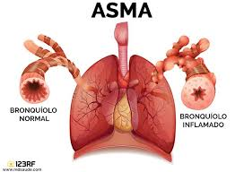

1. Influenza
La influenza es una infección viral que ataca el sistema respiratorio. Es altamente contagiosa.

2. Asma
El asma es una condición crónica que causa inflamación en las vías respiratorias y dificultad para respirar.
3. Arritmia
Las arritmias son trastornos del ritmo cardíaco que afectan la frecuencia o el ritmo de los latidos del corazón.

4. Conjuntivitis
La conjuntivitis es una inflamación de la membrana que recubre el ojo, causando enrojecimiento y picazón.

5. Gripe Común
La gripe común es una infección viral que afecta principalmente la nariz, la garganta y los pulmones.

6. Pediculosis
La pediculosis es una infestación de piojos en el cabello, frecuente en los entornos escolares.
7. Salmonela
La salmonela es una bacteria que causa infecciones intestinales y síntomas como diarrea, fiebre y dolor abdominal.